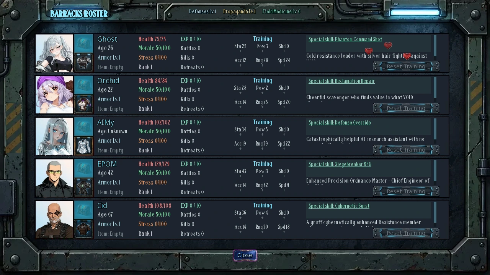
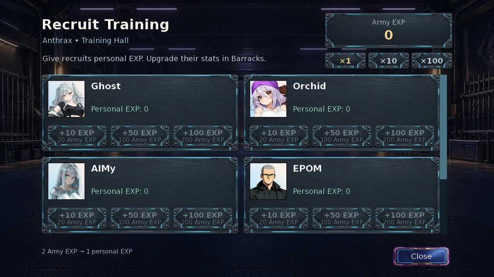
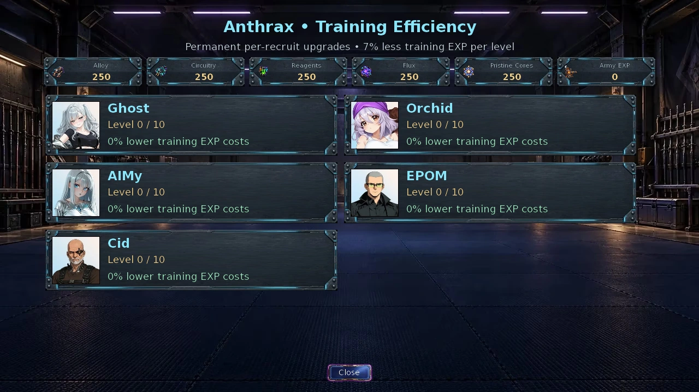
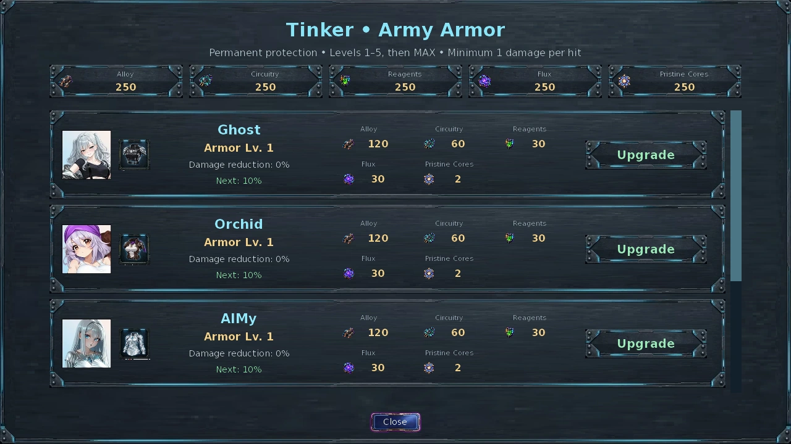
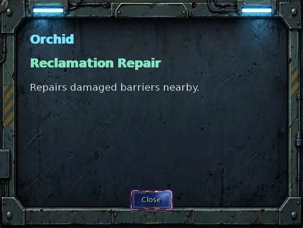
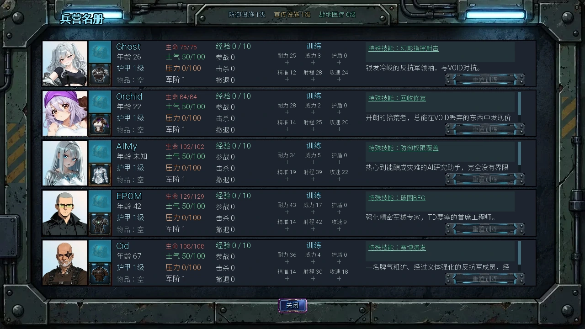
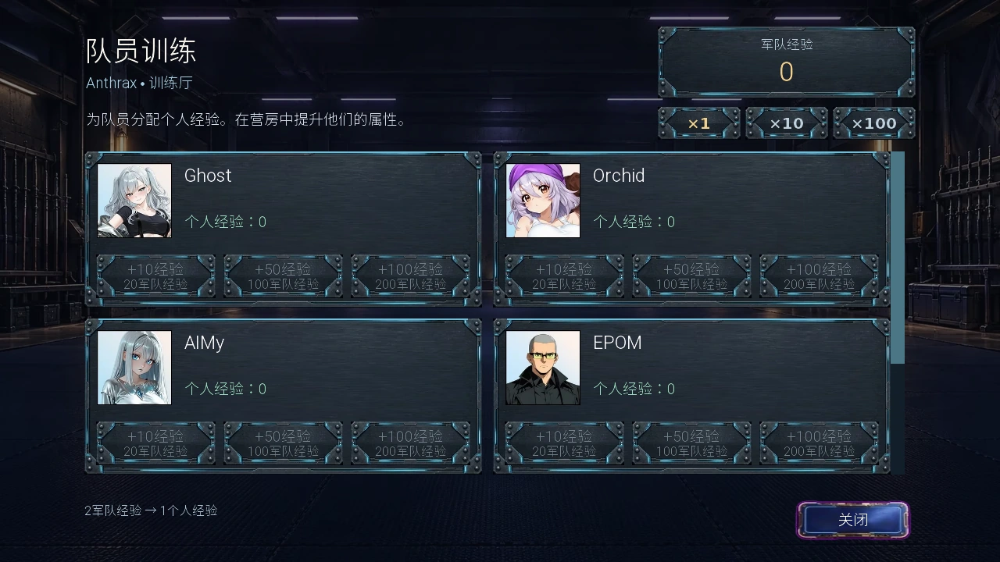
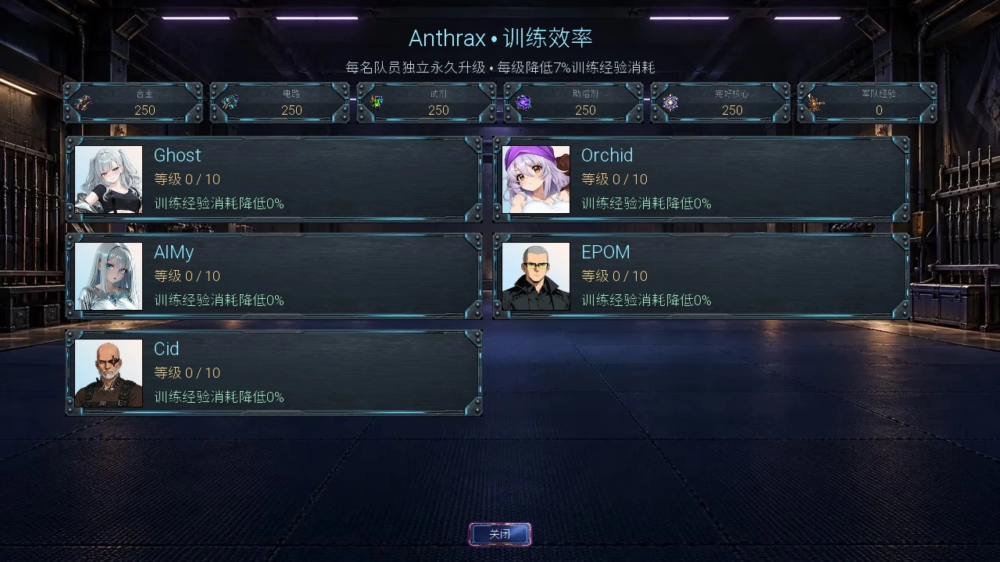
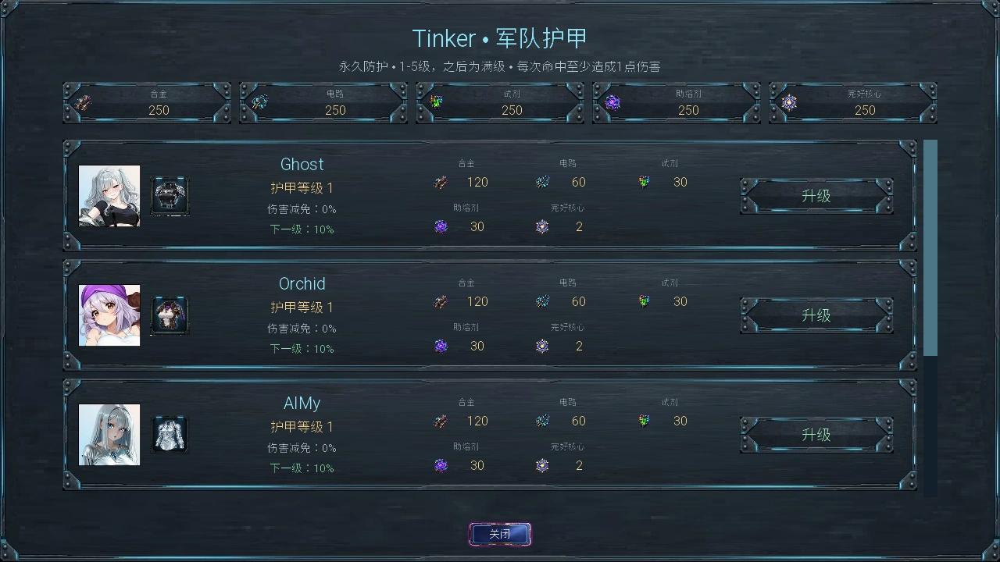
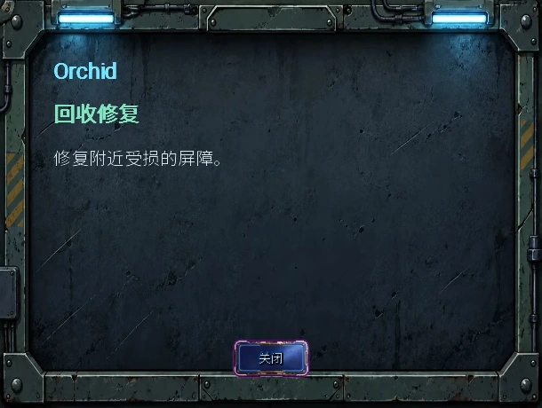

Select a screenshot to enlarge it. Screens show example inventories and progress.
Barracks manages the army used in Tower Defense. Your first roster is Ghost, Orchid, AIMy, EPOM and Cid. Personal EXP trains a chosen hero; shared Army EXP buys research, and Anthrax can later convert it into personal EXP.
- Select a hero in Barracks and inspect personal EXP and six training ratings.
- Use the upper equipment slot for an Army item and the lower armor icon for armor.
- Open the clickable Special skill name, then pair training purchases to improve its cooldown, range or power.
Using Barracks
Drag hero cards to reorder them. Desktop training supports clicking or holding the plus control; touch screens provide a larger training entry. Reset Training asks for confirmation. Rank, Morale, Stress and record fields are distinct from spendable EXP; earning EXP does not automatically allocate training.
Each hero has one Army-item slot. Equipping reserves one inventory copy; replacing or removing it returns the previous copy. Unique items have a single copy and cannot be shared simultaneously. Armor is a separate upgrade and does not occupy that slot.

Choosing training
| Rating | Effect per purchase | A useful reason to choose it |
|---|---|---|
| STA | +3 maximum HP | Survive pressure; pair with SPD for special cooldown. |
| POW | +1 normal attack Power | Improve damage; pair with SHD for Special Power. |
| SHD | +1 Shield rating | Improve per-hit protection; pair with POW. |
| ACC | +2 percentage points of accuracy | Miss less often; pair with RNG for Special Range. |
| RNG | +10 px normal range | Engage sooner; pair with ACC. |
| SPD | +0.05 attacks/second | Improve sustained fire; pair with STA. |
A hero’s six ratings share one escalating purchase count. Raising one rating also raises that hero’s next price in the other five; other heroes have separate curves. Training does not increase deployment cost.
Training prices, limits and special pairs
With B total purchases on that hero, the next undiscounted price is 10 + 5B + ceil(B² / 10) personal EXP: 10, 16, 21, 26, 32 for the first five. Ordinary ratings allow 998 purchases; Shield stops at effective 200 or 200 Shield purchases. Equipment can bring effective Shield to its cap sooner.
| Pair | Result |
|---|---|
| STA + SPD | Use the smaller purchased count: −0.054 seconds per pair; 500 pairs take 30 seconds to the 3-second minimum. |
| RNG + ACC | +1 Special Range per purchased pair, interpreted differently by each ability. |
| POW + SHD | +1 Special Power per purchased pair. |
Pairs count purchased boosts only, excluding starting ratings and equipment bonuses. Horizon Relay then multiplies the complete Special Range by 1.5; it cannot enlarge an already global pulse.

Anthrax: turn Army EXP into personal EXP
After Anthrax’s Report for Training and Everyone Starts Somewhere, open Recruit Training with her in Training Hall 08:00–18:00. Spend two Army EXP to give the selected hero one personal EXP, with no time, money or material cost.
This credits EXP only; choose stat purchases back in Barracks. A recruited hero remains eligible while any training track has room, even if Shield is capped. Kill-EXP item bonuses do not multiply the transfer, and Training Efficiency does not change its 2:1 ratio. Reset Training refunds personal EXP rather than converting it back to Army EXP.
All purchase sizes
| Personal EXP gained | Army EXP spent |
|---|---|
| 10 | 20 |
| 50 | 100 |
| 100 | 200 |
| 500 | 1000 |
| 1000 | 2000 |
| 5000 | 10000 |
| 10000 | 20000 |
Training Efficiency and refunds
After Anthrax’s Report for Training and Everyone Starts Somewhere, visit her in Training Hall 08:00–18:00 for Training Efficiency. Each hero has an independent level from 0 to 10: 7% off personal training EXP per level, up to 70%, with the final price rounded up.
Buying Efficiency after training still works: existing purchased training is repriced and the difference returns as that hero’s personal EXP. Efficiency itself costs Reclamation materials and shared Army EXP; those research costs are not refunded.
Reset Training in Barracks refunds personal EXP still invested, clears the six purchased counts, and retains Efficiency, equipment, armor and records. Earlier discount refunds are not paid a second time.
Complete per-level Efficiency costs
| Target level | Discount | Alloy | Circuitry | Reagents | Flux | Pristine Cores | Army EXP |
|---|---|---|---|---|---|---|---|
| 1 | 7% | 18 | 12 | 18 | 12 | 0 | 150 |
| 2 | 14% | 27 | 18 | 27 | 18 | 0 | 300 |
| 3 | 21% | 39 | 26 | 39 | 26 | 0 | 500 |
| 4 | 28% | 57 | 38 | 57 | 38 | 2 | 800 |
| 5 | 35% | 81 | 54 | 81 | 54 | 4 | 1250 |
| 6 | 42% | 114 | 76 | 114 | 76 | 6 | 1900 |
| 7 | 49% | 156 | 104 | 156 | 104 | 9 | 2800 |
| 8 | 56% | 210 | 140 | 210 | 140 | 13 | 4000 |
| 9 | 63% | 285 | 190 | 285 | 190 | 18 | 5600 |
| 10 | 70% | 375 | 250 | 375 | 250 | 26 | 7500 |
Each purchase advances only the selected hero by one level, with no time or money cost.

Armor and Shield are separate protections
Open Army Armor through Tinker’s Engineering action; the lower armor icon in Barracks also shows it. Each hero advances from unarmored Level 1 to Level 6 with 50% reduction. Armor protects that hero, not turrets, barriers or fortress Lives. Once Tinker moves to Engineering, her usual hours there are 18:00–24:00.
Complete armor costs and protection order
| Target level | Armor reduction | Alloy | Circuitry | Reagents | Flux | Pristine Cores |
|---|---|---|---|---|---|---|
| 2 | 10% | 120 | 60 | 30 | 30 | 2 |
| 3 | 20% | 240 | 120 | 60 | 60 | 5 |
| 4 | 30% | 420 | 210 | 105 | 105 | 12 |
| 5 | 40% | 700 | 350 | 175 | 175 | 24 |
| 6 | 50% | 1100 | 550 | 275 | 275 | 40 |
Shield is not a depleting pool. First, Shield / 600 gives a full-deflection chance, with Aegis Prototype adding ten percentage points. If not deflected, armor applies with upward rounding and at least one damage, followed by a separate Shield-reduction roll. From Shield 1 to 200, that roll’s chance rises linearly from 1% to 75%, and its reduction from 30% to 75%. Only full deflection directly reduces a hit to zero.

Army items: choose the function first
Ordinary components fill accuracy, range, attack-rate or survival gaps. Healing, EXP, aura and extraction items change how a run plays. Their penalties also apply; one equipment slot cannot cover every role.
All 22 currently obtainable items and effects
| Item | Type | Effect |
|---|---|---|
| Reinforced Plating | Repeatable | +5 STA; −2 SPD |
| Powered Bracer | Repeatable | +4 POW; +2 STA |
| Compact Shield Cell | Repeatable | +6 SHD |
| Smart Targeting Optic | Repeatable | +5 ACC |
| Longshot Rangefinder | Repeatable | +6 RNG; −2 SPD |
| Gyroscopic Stabilizer | Repeatable | +3 ACC; +2 RNG; −2 POW |
| Lightweight Actuators | Repeatable | +6 SPD; −3 STA |
| Heavy-Caliber Adapter | Repeatable | +6 POW; −15% attack rate |
| Field Med-Injector | Repeatable | After a cleared wave, heals the living deployed wearer for 20% maximum HP, plus Field Medicine percentage points. No revival. |
| Combat Stimulant | Repeatable | +15% attack rate; +5 Stress once per attempt if deployed |
| Training Data Chip | Repeatable | +20% personal kill EXP, rounded up per kill |
| Veteran's Memory Core | Unique | +60% personal kill EXP, rounded up per kill |
| Horizon Relay | Unique | +50% complete Special Range rating; the benefit depends on the special |
| Rally Patch | Repeatable | Every 5 battle seconds, heals the living wearer for 5% maximum HP plus Field Medicine flat HP; no revival |
| Salvage Transponder | Repeatable | Splits wearer’s kill EXP 50% personal / 50% Army; fractional halves are retained |
| Chrono Targeting Lens | Unique | +10 ACC; +10 RNG |
| Aegis Prototype | Unique | +12 SHD; +4 STA; −5 SPD; +10 percentage points to full deflection chance |
| Berserker Reactor | Unique | +10 POW; +10 SPD; −5 SHD; +10 Stress once per attempt if deployed |
| Phoenix Recovery Module | Unique | Once per battle, revives wearer at 30% maximum HP; no extra deployment |
| Commander's Standard | Unique | While bearer lives on the field, heroes within 125 px, including bearer, gain +3 POW / ACC / SHD; same aura does not stack |
| Boss Hunter Emblem | Unique | +25% damage to tagged bosses and +25% personal EXP from boss final blows |
| Emergency Phase Beacon | Unique | Extracts before an incoming hit would leave 20% HP or less, including lethal hits. Full-cost, full-HP redeployment starts NEXT wave. Can extract repeatedly; each adds one Retreat. |
Where to obtain items
EPOM offers five repeatable material trades in Engineering 06:00–22:00. After recruitment, Jinx offers three more in Supplies on even-numbered days 08:00–20:00. Trades spend materials but no in-game time.
Exact prices for the eight material trades
| NPC | Item | Alloy | Circuitry | Reagents | Flux |
|---|---|---|---|---|---|
| EPOM | Reinforced Plating | 9 | 0 | 3 | 0 |
| EPOM | Powered Bracer | 5 | 6 | 0 | 1 |
| EPOM | Compact Shield Cell | 2 | 4 | 0 | 6 |
| EPOM | Smart Targeting Optic | 1 | 8 | 0 | 3 |
| EPOM | Lightweight Actuators | 5 | 5 | 2 | 0 |
| Jinx | Longshot Rangefinder | 3 | 10 | 2 | 5 |
| Jinx | Combat Stimulant | 2 | 3 | 11 | 4 |
| Jinx | Salvage Transponder | 4 | 10 | 2 | 4 |
Ten Army gifts require the corresponding recruit, a Resistance Clout threshold and manually choosing that NPC’s gift action while present. Clout is not spent, and these gifts add no romance-stage requirement; listed personal-route prerequisites still apply.
Ten Clout gifts (includes late recruits)
| Recruit | Clout | Item | Location | Additional route prerequisite |
|---|---|---|---|---|
| Orchid | 10 | Rally Patch | Reclamation Bay | — |
| Tinker | 20 | Gyroscopic Stabilizer | Engineering | — |
| AIMy | 30 | Training Data Chip | AIMy's Control | — |
| CID | 45 | Heavy-Caliber Adapter | Underground Modification Clinic | — |
| Saline | 60 | Field Med-Injector | Medical Bay | — |
| EPOM | 80 | Berserker Reactor | Engineering | — |
| Riki | 110 | Boss Hunter Emblem | Barracks | — |
| Ghost | 150 | Commander's Standard | Underground Resistance Hideout | — |
| Pixel | 25 | Veteran's Memory Core | Operations Center | The Unoptimized Variable |
| Riki | 30 | Horizon Relay | Barracks | Chosen Position |
Maxed corresponding achievements in Kupie Love Training provide four more unique items: Orchid → Aegis Prototype; Glitch → Emergency Phase Beacon; Nova → Phoenix Recovery Module; Artemis → Chrono Targeting Lens.
Recruitment and starting values
The current release has 28 obtainable recruits: 27 through main-game routes and one through the optional Haunted Mansion continuation. Beyond the initial five, joining follows the relevant story, personal Objectives or event reward. Check those Objectives and the relevant guide first; the table identifies joining milestones without recounting outcomes.
Blinky, Yrsa and Sashina join through the Medieval reinforcements Objectives. After Story Beat 94, finish the relevant personal Objectives and heart-to-hearts, and learn Blink. Follow the Arcane Room sequence, then complete Room for Three in Allied Quarters. Later home-location changes retain earned battle membership; they can return for combat.
Show all joining milestones (late names and quest titles)
| Recruit | Joining milestone |
|---|---|
| Ghost | Starting roster |
| Orchid | Starting roster |
| AIMy | Starting roster |
| Epom | Starting roster |
| Cid | Starting roster |
| Chime | The Cavern Has an Owner |
| Liora | Hands for Our Side |
| Motley | Our War |
| Kitty | Our War |
| Bayne | Our War |
| Zodiac | Our War |
| Chamel | Our War |
| Poison | Our War |
| Artemis | Story Beat 32 |
| Riki | Story Beat 33 |
| Jinx | The One Variable |
| Tinker | I Have Hands |
| Neena | By Her Own Authority |
| Pixel | The Unoptimized Variable |
| Glitch | Permission to Disconnect |
| Anthrax | Report for Training |
| Saber | Story Beat 76 |
| Terra | Something Worth Defending |
| Saline | The First Open Door |
| Blinky | Room for Three |
| Yrsa | Room for Three |
| Sashina | Room for Three |
| Aldren | Haunted Mansion continuation: optional late recruitment reward. Complete the current Hall of Names challenge and collect its marked reward. |
Show all 28 untrained combat profiles and deployment prices
Every hero costs zero Salvage. These are combat values, rather than the converted training ratings: accuracy is percent, range pixels and speed attacks per second. Armor and items are additional.
| Recruit | HP | Power | Shield | Accuracy % | Range | Attacks/s | Ammo | Command |
|---|---|---|---|---|---|---|---|---|
| Ghost | 75 | 3 | 0 | 74 | 280 | 1.2 | 18 | 40 |
| Orchid | 84 | 2 | 0 | 78 | 250 | 1 | 12 | 40 |
| AIMy | 102 | 5 | 0 | 88 | 390 | 1.1 | 20 | 40 |
| Epom | 129 | 17 | 0 | 78 | 420 | 0.45 | 18 | 40 |
| Cid | 108 | 4 | 0 | 78 | 300 | 0.9 | 10 | 40 |
| Chime | 84 | 8 | 3 | 82 | 280 | 0.9 | 12 | 45 |
| Liora | 72 | 4 | 1 | 76 | 220 | 1 | 12 | 40 |
| Motley | 78 | 4 | 0 | 74 | 270 | 1 | 12 | 40 |
| Kitty | 84 | 4 | 0 | 80 | 100 | 1.3 | 0 | 40 |
| Bayne | 120 | 7 | 0 | 70 | 90 | 0.7 | 0 | 40 |
| Zodiac | 72 | 4 | 0 | 76 | 300 | 0.9 | 10 | 40 |
| Chamel | 81 | 5 | 0 | 82 | 120 | 1.2 | 0 | 40 |
| Poison | 102 | 6 | 0 | 74 | 100 | 0.9 | 0 | 40 |
| Artemis | 75 | 7 | 0 | 84 | 400 | 0.85 | 24 | 40 |
| Riki | 63 | 12 | 0 | 90 | 490 | 0.55 | 30 | 40 |
| Jinx | 72 | 2 | 0 | 72 | 290 | 1.65 | 16 | 40 |
| Tinker | 93 | 3 | 0 | 82 | 250 | 0.9 | 10 | 40 |
| Neena | 99 | 9 | 0 | 92 | 420 | 0.8 | 26 | 40 |
| Pixel | 66 | 3 | 0 | 80 | 310 | 1.4 | 15 | 40 |
| Glitch | 57 | 3 | 0 | 86 | 330 | 1 | 8 | 40 |
| Anthrax | 93 | 7 | 0 | 92 | 130 | 1.6 | 0 | 40 |
| Saber | 96 | 7 | 0 | 88 | 380 | 1.1 | 20 | 40 |
| Terra | 81 | 4 | 0 | 80 | 270 | 0.85 | 10 | 40 |
| Saline | 72 | 3 | 1 | 70 | 180 | 0.8 | 10 | 40 |
| Blinky | 66 | 4 | 0 | 78 | 300 | 1 | 8 | 40 |
| Yrsa | 147 | 8 | 0 | 90 | 90 | 1.25 | 0 | 40 |
| Sashina | 81 | 9 | 0 | 82 | 350 | 0.7 | 6 | 40 |
| Aldren | 78 | 6 | 2 | 78 | 280 | 0.8 | 8 | 40 |
Special abilities activate automatically
During an active wave, heroes use a ready special automatically when a valid target exists; they generally hold readiness without one. Pause freezes the timers. S only previews the animation. Special Range and Power mean different things for different abilities, so compare functions as well as ratings.
All current recruits’ special abilities
| Recruit | Ability | Base cooldown / Special Range / Power | Actual use |
|---|---|---|---|
| Ghost | Phantom Command Shot | 30/8/4 | Starts with four personal shots, retargeting within normal attack range. Special Range adds shots; Special Power adds shot damage. |
| Orchid | Reclamation Repair | 30/4/3 | Repairs barriers for 5× Special Power HP. Base radius 100 px plus added Special Range; does not heal heroes, turrets or Lives. |
| AIMy | Defense Override | 30/4/3 | Forces nearby attacking turrets into an extra burst, starting at four attacks; Special Power adds attacks. Base radius 100 px plus added Special Range. Nanite repair turrets are excluded. |
| Epom | Siegebreaker BFG | 30/4/8 | Forces nearby attacking turrets into an extra burst, starting at four attacks; Special Power adds attacks. Base radius 100 px plus added Special Range. Nanite repair turrets are excluded. |
| Cid | Cybernetic Burst | 30/4/3 | Explosive shot: base 100 px blast radius plus added Special Range; Special Power adds shot damage. |
| Chime | Crystal Nova | 30/10/8 | Area hit: normal Power plus 4× Special Power; base radius 190 px plus added Special Range, without an accuracy roll. |
| Liora | Steady Hands | 30/4/3 | Starts with four personal shots, retargeting within normal attack range. Special Range adds shots; Special Power adds shot damage. |
| Motley | Deadpan Shot | 30/6/3 | Starts with four personal shots, retargeting within normal attack range. Special Range adds shots; Special Power adds shot damage. |
| Kitty | Claw Flurry | 30/2/3 | Starts with three rapid melee strikes. Special Range adds strikes; Special Power adds damage. |
| Bayne | Hold the Line | 30/2/5 | Area punch: normal Power plus 3× Special Power. Reach extends 10× Special Range beyond the bodies of the hero and target. One hit per target, without an accuracy roll. |
| Zodiac | Last Card | 30/6/3 | Disables currently spawned non-robotic enemies across the field for Special Power / 400 seconds, including eligible bosses. No extra area from Special Range. |
| Chamel | False Opening | 30/3/3 | Suppresses affected enemies’ outgoing damage for 0.25× Special Power seconds. Base radius 100 px plus added Special Range; this is not a movement stun. |
| Poison | Knuckle Rush | 30/2/4 | Poisons the nearest enemy in normal attack range for ten seconds. Special Power is damage per tick; tick interval is 2 ÷ (1 + added Special Range / 100) seconds. |
| Artemis | Last-Elf Volley | 30/8/4 | Explosive shot: base 100 px blast radius plus added Special Range; Special Power adds shot damage. |
| Riki | Zero-Drift Shot | 30/10/6 | Piercing line: normal range plus 10× Special Range; each target takes normal shot damage plus Special Power. |
| Jinx | Loaded Ricochet | 30/6/3 | Starts with four personal shots, retargeting within normal attack range. Special Range adds shots; Special Power adds shot damage. |
| Tinker | Reversible Retrofit | 30/4/4 | Forces nearby attacking turrets into an extra burst, starting at four attacks; Special Power adds attacks. Base radius 100 px plus added Special Range. Nanite repair turrets are excluded. |
| Neena | Exit-Line Execution | 30/9/5 | Starts with four personal shots, retargeting within normal attack range. Special Range adds shots; Special Power adds shot damage. |
| Pixel | Unoptimized Trajectory | 30/6/2 | Starts with four personal shots, retargeting within normal attack range. Special Range adds shots; Special Power adds shot damage. |
| Glitch | Permission Revoked | 30/5/3 | Disables currently spawned robotic enemies across the field for Special Power / 400 seconds, including eligible bosses. No extra area from Special Range. |
| Anthrax | Shadow Arsenal | 30/3/6 | Starts with three rapid melee strikes. Special Range adds strikes; Special Power adds damage. |
| Saber | Security Sweep | 30/7/4 | Starts with four personal shots, retargeting within normal attack range. Special Range adds shots; Special Power adds shot damage. |
| Terra | Living Network | 30/5/3 | Conjures free temporary Trees: HP 30 + 2× Special Power. Limit starts at three, reaches ten at Special Range 200 and twenty at 500, then adds one per fifty without a fixed cap. These differ from purchased Trees. |
| Saline | Field Triage | 30/4/3 | Heals injured living heroes, including herself, for 5× Special Power HP. Base radius 100 px plus added Special Range. Field Medicine adds one HP and one radius pixel per level. |
| Blinky | Temporal Blink Nova | 30/4/3 | Banishes one eligible enemy within normal Range + 10× Special Range. Its maximum HP must be at most floor(30× Special Power); wounding it does not bypass that limit. Campaign final bosses are immune. Chooses the eligible enemy with highest maximum HP, nearest on a tie, and keeps readiness if none qualify. Ordinary kill rewards still apply. |
| Yrsa | Clanbreaker Whirlwind | 30/3/6 | Area punch: normal Power plus 3× Special Power. Reach extends 10× Special Range beyond the bodies of the hero and target. One hit per target, without an accuracy roll. |
| Sashina | Gravity Sigil | 30/5/5 | Piercing beam and endpoint explosion: damage 3× normal Power + 6× Special Power, reach normal Range + 10× Special Range, blast radius 90 + 2× Special Range px. Beam width is 20 + 0.5× Special Power px. Starts with three direct beam contacts; each ten Special Power above its starting value adds one. The explosion can hit further enemies, with at most one damage award per enemy per cast. |
| Aldren | Stolen Voices | 30/5/4 | Four one-second drains, each dealing rounded Special Power to enemies inside the aura. Radius is 100 px plus added Special Range. Slows movement by 25% while the target stays inside and the caster remains present; attack speed is unchanged. Heals the caster for 20% of actual HP removed, carrying fractions within the aura. It ends after four seconds, at wave end or when the caster leaves; no overlapping aura from the same caster. |
Extra burst attacks use successive chance rolls: Special Range for personal ranged bursts and rapid melee, Special Power for turret bursts. Start at rating / 100; each success adds one attack and multiplies the next chance by 0.75, stopping at the first failure. Extra attacks beyond the base four shots / three strikes are not a fixed linear count. Turret support requires at least half the turret footprint inside its aura.

Facilities and practical choices
The Defenses, Propaganda and Field Medicine levels above the roster come from NPC actions, rather than buying the header itself. Defenses protects barriers and turrets; Propaganda adds hero damage; Field Medicine improves specified healing. See TD Workshops for entries and requirements.
- Concentrate early EXP on a few heroes who can protect each other.
- Pair POW with SHD, STA with SPD, or RNG with ACC to support both normal combat and specials.
- Healing usually requires a living target; protect support heroes and check their actual reach.
- Efficiency refunds earlier overpayment. When changing direction, inspect the actual Reset Training refund.
- Ordinary retreat spends the attempt’s deployment; even a Beacon needs next-wave deployment resources.
兵营负责管理塔防军队。初始成员为 Ghost、Orchid、AIMy、EPOM 和 Cid。英雄用自己的经验训练；军队经验用于研发，之后也能找 Anthrax 转成个人经验。
- 在兵营点选英雄，先看个人经验与六项训练数值。
- 上方装备槽放军队物品，下方护甲图标查看独立护甲。
- 点击特殊技能名称查看实际效果，再用训练配对改善冷却、射程或威力。
兵营里的操作
拖动英雄卡片可以整理顺序。桌面端可点击或按住训练加号；触屏使用较大的训练入口。重置训练会先要求确认。等级、士气、压力和记录栏不能替代可花费经验；获得经验不会自动替你分配六项训练。
每位英雄只有一个军队物品槽。装备会占用仓库中的一份物品；替换或卸下会归还原物品。独特物品只有一份，不能同时交给多人。护甲是另一条独立升级，不占物品槽。

训练怎么选
| 训练项 | 每次购买的战斗效果 | 适合优先考虑 |
|---|---|---|
| 耐力（STA） | 最大生命 +3 | 承受伤害；与 SPD 配对缩短特殊技能冷却。 |
| 威力（POW） | 普通攻击威力 +1 | 提高输出；与 SHD 配对提高特殊威力。 |
| 护盾（SHD） | 护盾数值 +1 | 提高每次受击的保护概率；与 POW 配对。 |
| 精准（ACC） | 命中率 +2 个百分点 | 减少落空；与 RNG 配对提高特殊射程。 |
| 射程（RNG） | 普通射程 +10 像素 | 让攻击更早开始；与 ACC 配对。 |
| 攻速（SPD） | 攻击频率 +0.05 次／秒 | 提高持续输出；与 STA 配对。 |
每位英雄的六项训练共用涨价次数。先把一个项目买得很高，也会让同一英雄的其他项目变贵；其他英雄独立计价。训练不会增加战场部署价格。
训练费用、上限与特殊技能配对
设 B 为该英雄已经购买的训练总次数，未打折的下次费用为 10＋5B＋⌈B²÷10⌉ 点个人经验；前五次为 10、16、21、26、32。普通项目最多购买 998 次；护盾在有效数值达到 200 或已购买 200 次时停止。装备也可能使有效护盾提前达到上限。
| 配对 | 实际作用 |
|---|---|
| STA + SPD | 取购买次数较少的一项，每对缩短冷却 0.054 秒；500 对把 30 秒降到最低 3 秒。 |
| RNG + ACC | 每对特殊射程 +1。每种技能对这个数值的解释不同。 |
| POW + SHD | 每对特殊威力 +1。 |
只算实际购买次数；出生数值和物品加成不凑配对。地平线中继器在配对后把完整特殊射程提高 50%，但不会让本来全场生效的脉冲再扩大范围。

Anthrax：把军队经验分给英雄
完成 Anthrax 的《报到任教》和《谁都有起点》后，在训练厅 08:00–18:00 找她打开「队员训练」。每花 2 点军队经验，就给所选英雄 1 点个人经验；不花时间、金钱或材料。
这只增加经验余额，回兵营才选择训练属性。已招募英雄只要还有任一未满的训练项就能买；护盾满了不代表其他项目也满。经验物品的击杀加成不会放大这笔转入，训练效率也不会改变 2:1 兑换比例。重置训练退的是个人经验，不会把它换回军队经验。
全部购买档位
| 个人经验增加 | 花费军队经验 |
|---|---|
| 10 | 20 |
| 50 | 100 |
| 100 | 200 |
| 500 | 1000 |
| 1000 | 2000 |
| 5000 | 10000 |
| 10000 | 20000 |
训练效率与退款
完成 Anthrax 的《报到任教》和《谁都有起点》后，在训练厅 08:00–18:00 找她打开训练效率菜单。每位英雄有自己的 0–10 级，每级降低训练经验费用 7%，最高降低 70%；费用仍向上取整。
已经练过再升级效率也不会吃亏：系统会按新折扣重新计算已购买训练，把差额退回该英雄的个人经验。购买效率本身花的是再生工坊材料和军队经验，不会退还这笔研发支出。
兵营的重置训练会退回仍实际投入的个人经验，清除六项购买次数，并保留训练效率、装备、护甲和记录。先前已退过的折扣差额不会再退一次。
每级训练效率的完整费用
| 目标等级 | 折扣 | 合金 | 电路 | 试剂 | 助熔剂 | 完好核心 | 军队经验 |
|---|---|---|---|---|---|---|---|
| 1 | 7% | 18 | 12 | 18 | 12 | 0 | 150 |
| 2 | 14% | 27 | 18 | 27 | 18 | 0 | 300 |
| 3 | 21% | 39 | 26 | 39 | 26 | 0 | 500 |
| 4 | 28% | 57 | 38 | 57 | 38 | 2 | 800 |
| 5 | 35% | 81 | 54 | 81 | 54 | 4 | 1250 |
| 6 | 42% | 114 | 76 | 114 | 76 | 6 | 1900 |
| 7 | 49% | 156 | 104 | 156 | 104 | 9 | 2800 |
| 8 | 56% | 210 | 140 | 210 | 140 | 13 | 4000 |
| 9 | 63% | 285 | 190 | 285 | 190 | 18 | 5600 |
| 10 | 70% | 375 | 250 | 375 | 250 | 26 | 7500 |
每次只购买所选英雄的下一级；不消耗游戏时间或金钱。

护甲与护盾是两套保护
在 Tinker 的工程室行动中打开军队护甲；兵营下方护甲图标也能查看。每位英雄从 1 级无护甲升到 6 级，最高减伤 50%。护甲只保护该英雄，不保护炮塔、屏障或要塞生命。Tinker 移到工程室后，通常 18:00–24:00 在场。
完整护甲价格与受击顺序
| 目标等级 | 护甲减伤 | 合金 | 电路 | 试剂 | 助熔剂 | 完好核心 |
|---|---|---|---|---|---|---|
| 2 | 10% | 120 | 60 | 30 | 30 | 2 |
| 3 | 20% | 240 | 120 | 60 | 60 | 5 |
| 4 | 30% | 420 | 210 | 105 | 105 | 12 |
| 5 | 40% | 700 | 350 | 175 | 175 | 24 |
| 6 | 50% | 1100 | 550 | 275 | 275 | 40 |
护盾不是会耗尽的护盾条。先以护盾÷600 的概率完全偏转；神盾原型另加 10 个百分点。若未偏转，先扣护甲、向上取整且至少受 1 点，再独立判定一次护盾减伤。护盾从 1 到 200 时，该次判定概率从 1% 线性升到 75%，减伤比例从 30% 升到 75%。只有完全偏转可以直接变成零伤害。

军队物品：先看功能再选数值
普通配件适合补命中、射程、攻速或生存短板。治疗、经验、光环与撤离物品则改变整场打法。物品的负面数值也会生效；一格装备不能同时承担所有用途。
全部 22 种当前可获取物品与效果
| 物品 | 类型 | 效果 |
|---|---|---|
| 强化装甲板 | 可重复获取 | 耐力 +5；攻速 −2 |
| 动力护臂 | 可重复获取 | 威力 +4；耐力 +2 |
| 小型护盾电池 | 可重复获取 | 护盾 +6 |
| 智能瞄准镜 | 可重复获取 | 精准 +5 |
| 远射测距仪 | 可重复获取 | 射程 +6；攻速 −2 |
| 陀螺稳定器 | 可重复获取 | 精准 +3；射程 +2；威力 −2 |
| 轻量化驱动器 | 可重复获取 | 攻速 +6；耐力 −3 |
| 大口径转接器 | 可重复获取 | 威力 +6；攻击频率 −15% |
| 战地医疗注射器 | 可重复获取 | 每完整通过一波，为仍存活且在场的佩戴者恢复最大生命的 20%；战地医疗每级另加 1 个百分点。不能复活。 |
| 战斗兴奋剂 | 可重复获取 | 攻击频率 +15%；本场部署过则增加 5 压力，每场一次 |
| 训练数据芯片 | 可重复获取 | 个人击杀经验 +20%，每次击杀向上取整 |
| 老兵记忆核心 | 独特 | 个人击杀经验 +60%，每次击杀向上取整 |
| 地平线中继器 | 独特 | 完整特殊射程数值 +50%；实际收益取决于技能 |
| 重整徽章 | 可重复获取 | 每 5 战斗秒，为存活的佩戴者恢复最大生命的 5%，另加等同战地医疗等级的生命；不能复活 |
| 回收应答器 | 可重复获取 | 佩戴者的击杀经验一半归个人、一半归军队；不足一整点的部分会保留 |
| 时序瞄准透镜 | 独特 | 精准 +10；射程 +10 |
| 神盾原型 | 独特 | 护盾 +12；耐力 +4；攻速 −5；完全偏转概率另加 10 个百分点 |
| 狂战士反应堆 | 独特 | 威力 +10；攻速 +10；护盾 −5；本场部署过则增加 10 压力，每场一次 |
| 凤凰复苏模块 | 独特 | 每场一次，佩戴者倒下时以最大生命的 30% 复起；不增加部署次数 |
| 指挥官战旗 | 独特 | 旗手存活且在场时，125 像素内的英雄（含自己）威力／精准／SHD各 +3；同类光环不叠加 |
| 首领猎手徽章 | 独特 | 对首领伤害 +25%；亲自完成首领最后一击时，个人经验 +25% |
| 紧急相位信标 | 独特 | 来袭伤害将使生命降至 20% 或以下（含致命伤害）前撤离；从下一波起可再次付费、满生命部署。可以反复撤离，每次计一次撤退。 |
物品从哪里来
EPOM 在工程室 06:00–22:00 提供五种可重复材料兑换。Jinx 招募后，只在双数日 08:00–20:00 到补给库，提供另外三种。兑换会花材料，不花游戏时间。
八种材料兑换的确切价格
| NPC | 物品 | 合金 | 电路 | 试剂 | 助熔剂 |
|---|---|---|---|---|---|
| EPOM | 强化装甲板 | 9 | 0 | 3 | 0 |
| EPOM | 动力护臂 | 5 | 6 | 0 | 1 |
| EPOM | 小型护盾电池 | 2 | 4 | 0 | 6 |
| EPOM | 智能瞄准镜 | 1 | 8 | 0 | 3 |
| EPOM | 轻量化驱动器 | 5 | 5 | 2 | 0 |
| Jinx | 远射测距仪 | 3 | 10 | 2 | 5 |
| Jinx | 战斗兴奋剂 | 2 | 3 | 11 | 4 |
| Jinx | 回收应答器 | 4 | 10 | 2 | 4 |
十份军队礼物需要招募对应成员、达到反抗军声望，并在其本人在场时手动选择礼物行动。声望只是门槛，不会扣除，也不要求额外的恋爱阶段；表中的个人剧情条件仍需完成。
十份声望礼物（含后期成员）
| 成员 | 声望 | 物品 | 地点 | 额外剧情条件 |
|---|---|---|---|---|
| Orchid | 10 | 重整徽章 | 再生工坊 | — |
| Tinker | 20 | 陀螺稳定器 | 工程室 | — |
| AIMy | 30 | 训练数据芯片 | AIMy 的控制室 | — |
| CID | 45 | 大口径转接器 | 地下改造诊所 | — |
| Saline | 60 | 战地医疗注射器 | 医疗室 | — |
| EPOM | 80 | 狂战士反应堆 | 工程室 | — |
| Riki | 110 | 首领猎手徽章 | 兵营 | — |
| Ghost | 150 | 指挥官战旗 | 反抗军藏身处 | — |
| Pixel | 25 | 老兵记忆核心 | 作战中心 | 未优化变量 |
| Riki | 30 | 地平线中继器 | 兵营 | 选择的位置 |
Kupie 的爱之训练的对应满级成就还会给四件独特物品：Orchid → 神盾原型；Glitch → 紧急相位信标；Nova → 凤凰复苏模块；Artemis → 时序瞄准透镜。完整玩法见 Kupie 的爱之训练。
招募与初始数值
当前可取得28位成员：主游戏路线27位，闹鬼豪宅的可选后续内容另有1位。除了初始五人，其余由相应主线、个人目标或活动奖励加入；先检查目标和对应指南，表格只列加入节点，不揭示故事结果。
Blinky、Yrsa 与 Sashina 通过中世纪援军目标加入：主线节点94之后，先完成相关个人目标与交心对话，并学会闪现；沿奥术房中的目标推进，最后到盟友居所完成「三人一室」。后续住所变化不会撤销已经取得的战场成员资格；她们仍能在出战时返回。
展开完整招募节点（含后期名字与任务名）
| 成员 | 加入节点 |
|---|---|
| Ghost | 初始成员 |
| Orchid | 初始成员 |
| AIMy | 初始成员 |
| Epom | 初始成员 |
| Cid | 初始成员 |
| Chime | 洞窟原来有主人 |
| Liora | 为我方出力 |
| Motley | 我们的战争 |
| Kitty | 我们的战争 |
| Bayne | 我们的战争 |
| Zodiac | 我们的战争 |
| Chamel | 我们的战争 |
| Poison | 我们的战争 |
| Artemis | 主线节点 32 |
| Riki | 主线节点 33 |
| Jinx | 唯一变量 |
| Tinker | 我有双手 |
| Neena | 凭她自己的决定权 |
| Pixel | 未优化变量 |
| Glitch | 断开的权利 |
| Anthrax | 报到任教 |
| Saber | 主线节点 76 |
| Terra | 值得守护的事物 |
| Saline | 第一扇敞开的门 |
| Blinky | 三人一室 |
| Yrsa | 三人一室 |
| Sashina | 三人一室 |
| Aldren | 闹鬼豪宅后续内容：后期可选招募奖励；完成名字大厅的当前挑战后，按提示领取标记的收集物。 |
展开28位成员的未训练战斗值与部署价格
所有英雄的回收物部署费均为 0。下表为战斗值，不是六项训练栏的换算数值；命中以百分比、射程以像素、速度以每秒攻击次数表示。护甲和物品另算。
| 成员 | 生命 | 威力 | 护盾 | 命中% | 射程 | 攻速 | 弹药 | 指挥 |
|---|---|---|---|---|---|---|---|---|
| Ghost | 75 | 3 | 0 | 74 | 280 | 1.2 | 18 | 40 |
| Orchid | 84 | 2 | 0 | 78 | 250 | 1 | 12 | 40 |
| AIMy | 102 | 5 | 0 | 88 | 390 | 1.1 | 20 | 40 |
| Epom | 129 | 17 | 0 | 78 | 420 | 0.45 | 18 | 40 |
| Cid | 108 | 4 | 0 | 78 | 300 | 0.9 | 10 | 40 |
| Chime | 84 | 8 | 3 | 82 | 280 | 0.9 | 12 | 45 |
| Liora | 72 | 4 | 1 | 76 | 220 | 1 | 12 | 40 |
| Motley | 78 | 4 | 0 | 74 | 270 | 1 | 12 | 40 |
| Kitty | 84 | 4 | 0 | 80 | 100 | 1.3 | 0 | 40 |
| Bayne | 120 | 7 | 0 | 70 | 90 | 0.7 | 0 | 40 |
| Zodiac | 72 | 4 | 0 | 76 | 300 | 0.9 | 10 | 40 |
| Chamel | 81 | 5 | 0 | 82 | 120 | 1.2 | 0 | 40 |
| Poison | 102 | 6 | 0 | 74 | 100 | 0.9 | 0 | 40 |
| Artemis | 75 | 7 | 0 | 84 | 400 | 0.85 | 24 | 40 |
| Riki | 63 | 12 | 0 | 90 | 490 | 0.55 | 30 | 40 |
| Jinx | 72 | 2 | 0 | 72 | 290 | 1.65 | 16 | 40 |
| Tinker | 93 | 3 | 0 | 82 | 250 | 0.9 | 10 | 40 |
| Neena | 99 | 9 | 0 | 92 | 420 | 0.8 | 26 | 40 |
| Pixel | 66 | 3 | 0 | 80 | 310 | 1.4 | 15 | 40 |
| Glitch | 57 | 3 | 0 | 86 | 330 | 1 | 8 | 40 |
| Anthrax | 93 | 7 | 0 | 92 | 130 | 1.6 | 0 | 40 |
| Saber | 96 | 7 | 0 | 88 | 380 | 1.1 | 20 | 40 |
| Terra | 81 | 4 | 0 | 80 | 270 | 0.85 | 10 | 40 |
| Saline | 72 | 3 | 1 | 70 | 180 | 0.8 | 10 | 40 |
| Blinky | 66 | 4 | 0 | 78 | 300 | 1 | 8 | 40 |
| Yrsa | 147 | 8 | 0 | 90 | 90 | 1.25 | 0 | 40 |
| Sashina | 81 | 9 | 0 | 82 | 350 | 0.7 | 6 | 40 |
| Aldren | 78 | 6 | 2 | 78 | 280 | 0.8 | 8 | 40 |
特殊技能会自动使用
战斗进行时，英雄会在冷却完成且有合适目标时自动使用特殊技能；没有合适目标通常会保留就绪状态。暂停时计时也暂停。按 S 只是动作预览。不同技能的特殊射程和特殊威力含义不同，不要只按数字高低选人。
全部当前成员的特殊技能参考
| 成员 | 技能 | 起始冷却／特殊射程／特殊威力 | 实际作用 |
|---|---|---|---|
| Ghost | 幻影指挥射击 | 30/8/4 | 基础为连续四次个人射击，在普通射程内重新选敌；特殊射程增加次数，特殊威力增加每发伤害。 |
| Orchid | 回收修复 | 30/4/3 | 为范围内屏障恢复 5×特殊威力的生命。基础半径 100 像素，加上新增特殊射程；不治疗英雄、炮塔或要塞生命。 |
| AIMy | 防御权限覆盖 | 30/4/3 | 让附近攻击型炮塔额外连发，基础四次，特殊威力增加次数；基础半径 100 像素，加上新增特殊射程。不作用于纳米修复信标。 |
| Epom | 破围BFG | 30/4/8 | 让附近攻击型炮塔额外连发，基础四次，特殊威力增加次数；基础半径 100 像素，加上新增特殊射程。不作用于纳米修复信标。 |
| Cid | 赛博爆发 | 30/4/3 | 爆炸射击：基础半径 100 像素，加上新增特殊射程；特殊威力增加伤害。 |
| Chime | 水晶新星 | 30/10/8 | 范围伤害：普通威力＋4×特殊威力；基础半径 190 像素，加上新增特殊射程，不进行命中判定。 |
| Liora | 稳稳开火 | 30/4/3 | 基础为连续四次个人射击，在普通射程内重新选敌；特殊射程增加次数，特殊威力增加每发伤害。 |
| Motley | 冷面射击 | 30/6/3 | 基础为连续四次个人射击，在普通射程内重新选敌；特殊射程增加次数，特殊威力增加每发伤害。 |
| Kitty | 利爪连击 | 30/2/3 | 基础为三次快速近战打击；特殊射程增加次数，特殊威力增加伤害。 |
| Bayne | 坚守防线 | 30/2/5 | 范围重拳：普通威力＋3×特殊威力。接触范围向双方实体边缘之外延伸10×特殊射程；每个目标命中一次，不进行命中判定。 |
| Zodiac | 最后底牌 | 30/6/3 | 全场禁用已经出现的非机械敌人，持续特殊威力÷400 秒，适用的首领也会受影响；特殊射程不会再扩大范围。 |
| Chamel | 虚假破绽 | 30/3/3 | 在 0.25×特殊威力秒内使受影响敌人的对外伤害失效；基础半径 100 像素，加上新增特殊射程。不会因此禁止移动。 |
| Poison | 铁拳猛攻 | 30/2/4 | 使普通射程内最近的敌人中毒十秒。特殊威力为每次伤害；间隔为 2÷（1＋新增特殊射程÷100）秒。 |
| Artemis | 末代精灵齐射 | 30/8/4 | 爆炸射击：基础半径 100 像素，加上新增特殊射程；特殊威力增加伤害。 |
| Riki | 零偏移射击 | 30/10/6 | 贯穿直线：普通射程＋10×特殊射程；每个目标承受普通射击伤害＋特殊威力。 |
| Jinx | 蓄力跳弹 | 30/6/3 | 基础为连续四次个人射击，在普通射程内重新选敌；特殊射程增加次数，特殊威力增加每发伤害。 |
| Tinker | 可逆改装 | 30/4/4 | 让附近攻击型炮塔额外连发，基础四次，特殊威力增加次数；基础半径 100 像素，加上新增特殊射程。不作用于纳米修复信标。 |
| Neena | 退场线处决 | 30/9/5 | 基础为连续四次个人射击，在普通射程内重新选敌；特殊射程增加次数，特殊威力增加每发伤害。 |
| Pixel | 未优化弹道 | 30/6/2 | 基础为连续四次个人射击，在普通射程内重新选敌；特殊射程增加次数，特殊威力增加每发伤害。 |
| Glitch | 权限撤销 | 30/5/3 | 全场禁用已经出现的机械敌人，持续特殊威力÷400 秒，适用的首领也会受影响；特殊射程不会再扩大范围。 |
| Anthrax | 暗影武库 | 30/3/6 | 基础为三次快速近战打击；特殊射程增加次数，特殊威力增加伤害。 |
| Saber | 安保扫荡 | 30/7/4 | 基础为连续四次个人射击，在普通射程内重新选敌；特殊射程增加次数，特殊威力增加每发伤害。 |
| Terra | 生命网络 | 30/5/3 | 免费召出临时树木，生命为 30＋2×特殊威力。基础上限三棵；特殊射程 200 时十棵、500 时二十棵，之后每五十再加一棵，没有固定最终上限。这些树与付费树木分开计算。 |
| Saline | 战地救护 | 30/4/3 | 为受伤且存活的英雄（含自己）恢复 5×特殊威力的生命。基础半径 100 像素，加上新增特殊射程；战地医疗每级另加 1 生命和 1 像素半径。 |
| Blinky | 时空闪烁爆发 | 30/4/3 | 放逐普通射程＋10×特殊射程内的一名合格敌人。敌人的生命上限须不超过⌊30×特殊威力⌋，先打伤不会绕过门槛；战役最终首领免疫。优先选生命上限最高者，同值时选最近者；没有合格目标时保留就绪状态。仍结算普通击杀奖励。 |
| Yrsa | 破族旋风 | 30/3/6 | 范围重拳：普通威力＋3×特殊威力。接触范围向双方实体边缘之外延伸10×特殊射程；每个目标命中一次，不进行命中判定。 |
| Sashina | 重力符印 | 30/5/5 | 贯穿光束与终点爆炸：伤害＝3×普通威力＋6×特殊威力，长度＝普通射程＋10×特殊射程，爆炸半径＝90＋2×特殊射程像素，光束宽度＝20＋0.5×特殊威力像素。光束起初最多直接命中3名敌人；特殊威力每比初值高10，再加1名。爆炸可波及更多敌人，但每次施法对同一敌人只结算一次伤害。 |
| Aldren | 窃魂之声 | 30/5/4 | 连续四次、每秒一次汲取，对光环内敌人造成四舍五入后的特殊威力伤害。半径为100像素＋新增特殊射程。敌人留在范围内且施法者仍在场时，移动速度降低25%，不改变攻速。实际扣除的敌人生命有20%用于治疗自己，小数在本次光环内累计。四秒结束、波次结束或施法者离场时终止，同一施法者不会叠放光环。 |
连发的额外次数是连续概率判定：个人远程连发和快速近战取特殊射程，炮塔连发取特殊威力。起始概率为对应数值÷100；每成功一次就多一次攻击，再把下一次概率乘 0.75，第一次失败即停止。基础四发／三次打击之外的次数不是固定线性增加。炮塔支援需要至少一半炮塔占地在范围内。

设施加成与实用选择
兵营上方的防御、宣传与战地医疗等级来自角色行动，不是点击标题直接购买。防御保护屏障和炮塔；宣传增加英雄伤害；战地医疗改善指定治疗。完整入口和要求见 TD工坊。
- 先培养几位能互相保护的成员，比平均分散有限经验更容易形成稳定阵型。
- POW 与 SHD、STA 与 SPD、RNG 与 ACC 配对时，同时兼顾普通攻击和特殊技能。
- 治疗只能照顾仍存活的单位；靠后摆放支援，并留意真实范围。
- 提高训练效率可追溯退款；需要改方向时，先看重置确认框的实际退款。
- 撤退通常耗掉本场部署资格；用信标时仍要预留下一波的完整费用。
Adapted and updated from the community Chronoromancer Wiki. Community source and history · CC BY-SA 4.0. Game images © Chronoromancer Studio.